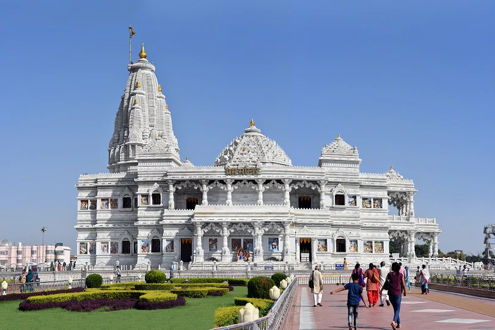
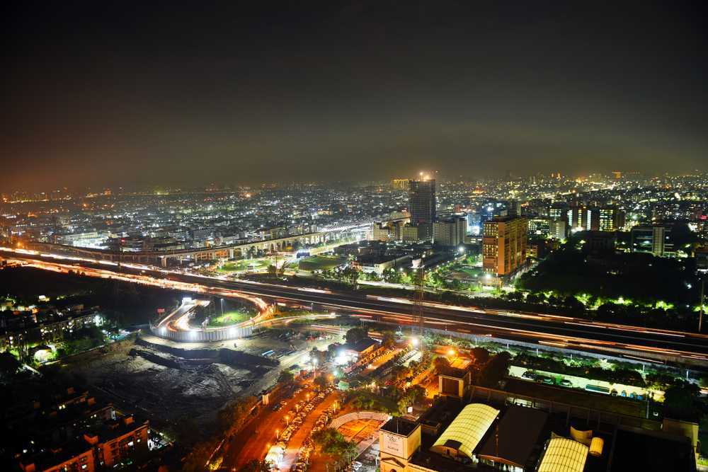
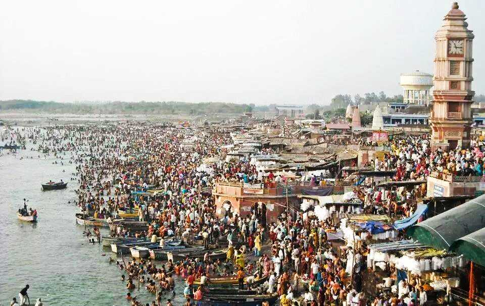

Agra, a city in Uttar Pradesh, India, is renowned for its Mughal-era architecture, particularly the Taj Mahal, Agra Fort, and Fatehpur Sikri, all UNESCO World Heritage Sites, and is a major tourist destination.
Varanasi, also known as Kashi, is a revered Hindu pilgrimage city located on the Ganges River in Uttar Pradesh, India, known for its ancient temples, ghats (stairways to the river), and the Kashi Vishwanath Temple, dedicated to Lord Shiva.

Vrindavan, a city in the Mathura district of Uttar Pradesh, India, is a significant Hindu pilgrimage site, particularly for Vaishnavas, believed to be the place where Lord Krishna spent his childhood and is home to numerous temples dedicated to Krishna and Radha.
Prayagraj, formerly known as Allahabad, is a city in southern Uttar Pradesh, India, renowned for its spiritual significance as the confluence of the Ganga, Yamuna, and mythical Saraswati rivers, a place considered sacred by Hindus.

Mathura, a city in Uttar Pradesh, is a holy city for Hindus, revered as the birthplace of Lord Krishna, and a major pilgrimage site, especially during Janmashtami.
Chitrakoot, a significant pilgrimage center in India, is renowned for its religious and cultural importance, particularly its connection to the Ramayana, and is believed to be the place where Lord Rama, Sita, and Lakshmana spent a portion of their exile.

Ayodhya, a city in Uttar Pradesh, India, is revered as the birthplace of Lord Rama in Hinduism and the capital of the ancient Kosala Kingdom, holding immense religious and historical significance.
Dudhwa National Park, located in the Terai region of Uttar Pradesh, India, is a protected area and tiger reserve known for its diverse wildlife, including tigers, swamp deer, and the reintroduced Indian one-horned rhinoceros.
Jhansi, known as the "Gateway to Bundelkhand," is a historic city in Uttar Pradesh, famed for its role in the 1857 Indian Mutiny and the bravery of Rani Lakshmibai, who led resistance against the British from the Jhansi Fort.

Noida, short for New Okhla Industrial Development Authority, is a planned city in Uttar Pradesh, India, known for its industrial and IT sectors, and its close proximity to New Delhi.

At just about 110 km from Delhi, Garhmukteshwar is a heritage town that dates back to having been part of ancient Hastinapur. It currently falls in the Hapur District of Uttar Pradesh. One of the famous road trip routes from Delhi, this is the closest point where one can take a bath in the Holy Ganges.

Also known as Shahid Chandra Shekhar Azad Bird Sanctuary, the Nawabganj Bird Sanctuary is located in Unnao near Lucknow. Engulfed by dense forests, this bird sanctuary is home to over 250 species birds and is also a great place to spot other wildlife.